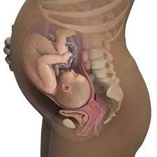

It’s been a long road, but you have a lot to look forward to at eight months pregnant. You’re now in the home stretch of your pregnancy. The third trimester is all about your little one growing, developing, and putting on weight so he’s ready to meet you when the time comes. Read on to learn more about what’s to come when you’re eight months pregnant including possible symptoms, baby development, and preparations for your baby’s birth.
At eight months pregnant, you may be faced with some brand-new symptoms as well as those you know well. Hang in there if you’re experiencing any of these symptoms at eight months pregnant:
As your uterus grows, space in your abdomen is getting tight. Your uterus might be pushing your stomach up against your lungs, making it hard to take a deep breath. Give your lungs more room by standing and sitting up as straight as you can.
Increased blood circulation can cause enlarged veins that can sometimes be itchy or painful. When these veins pop up around your rectal area, they’re called hemorrhoids. They’re common during pregnancy as the uterus starts to put pressure on veins and restrict blood flow to and from the lower body. To try to prevent hemorrhoids, make sure you’re eating enough fiber and staying hydrated, and try to stick to the healthy weight gain recommended by your healthcare provider. If hemorrhoids do strike, apply an ice pack or run yourself a warm bath for relief.
Enlarged veins can also appear on your legs. They might appear bluish and raised, and they can sometimes be uncomfortably sore or itchy. You might not like the way they look, but they’re usually harmless. You can try to relieve any swelling or pain by keeping your feet elevated whenever you can, and avoid crossing your legs when you sit. Some moms-to-be find that wearing support hose can ease some of the discomfort.
Leg cramps can hit during the third trimester, and experts aren’t entirely sure what triggers these uncomfortable cramps. To prevent them, stretch your calf muscles before bed, and gently massage the calf using downward strokes if a cramp strikes. Your healthcare provider can also recommend some stretching exercises that may help.
Not surprisingly, you may be feeling more tired this month. At eight months pregnant, your belly will have grown quite big, and you may find it tiring just going about your day. It can also be tougher to sleep comfortably at night at this point in your pregnancy. Keep following your healthy pregnancy diet, and, with your provider’s OK, continue exercising. These measures can help give you a much-needed energy boost and help you sleep at night. Oh, and be sure to rest whenever you can. Every little cat nap can help!
Your baby is dropping lower into your pelvis in preparation for being born. As a result, you might feel as if your baby is sitting on top of your bladder right about now, causing you to head for the ladies’ room more often. If you find that you’re leaking urine when you laugh, cough, or sneeze, it may be helpful to wear a panty liner. Otherwise, try to make sure you hit the restroom before you leave the house, or go into a meeting at work.
You might start to experience more emotional symptoms when you start to see the end of your pregnancy and the birth of your baby fast approaching. It’s normal to worry about childbirth and how your life might change once you bring your baby home, especially if this is your first baby. It can help to talk to family, friends, your healthcare provider, and other moms about your thoughts and fears to get some reassurance that things will work out. You might also consider enrolling in a parenting or childbirth class (if you haven’t already) to arm yourself with the information you’ll need for labor, delivery, and beyond. These classes are also a great way to meet other expectant moms and parents-to-be.
When you’re eight months pregnant, you might start or continue to experience practice contractions, known as Braxton Hicks contractions. These contractions are usually irregular, don’t get stronger, and don’t occur more frequently over time. They usually go away if you move or change positions. If you’re wondering whether what you’re experiencing is actually true labor, time your contractions using our downloadable Contraction Tracking Chart, and contact your healthcare provider if you have any questions. True labor contractions occur regularly and get stronger. At eight months pregnant, true labor contractions are a signal of preterm labor, and your provider will know what steps need to be taken.
When you’re eight months pregnant, your little one is quickly gaining weight and fat, and he’s getting closer to his eventual birth weight. The fine hair called lanugo that has covered his tiny body over the past few weeks starts to disappear. The hair on his head may now be starting to grow instead. This is one more thing to look forward to: Finding out the day your baby’s born whether he’s got a crop of hair up there! Underneath that hair, your baby’s brain continues to develop, to the point where he’s now better able to control his body temperature — a function he’ll need when he’s outside the womb. Although some of his bones have begun to harden, his skull is still soft to allow it to pass more easily through the birth canal when the time comes. Your baby might also be a little more active this month. From hiccups to stretches and kicks, it’s possible that you’ll feel some more distinct movements when you’re eight months pregnant. Your healthcare provider might have suggested that you count your little one’s movements every day. One method is to see how long it takes to feel 10 distinct movements. Your baby might be more active just after you’ve eaten, so that’s often a good time to sit still and count his moves. You can download our Fetal Movement Tracker to help get you started. Talk to your provider if you have any questions about your little one’s movements.
Your baby is about 18 to 20 inches long this month, and is gaining about half a pound a week. When you’re eight months pregnant, your baby may weigh anywhere from 5 to 7 pounds.
Check out these illustrations for a glimpse at what your baby might look like when you’re eight months pregnant:
It’s so important to keep up your healthy diet when you’re eight months pregnant. Not only are you helping provide essential nutrients to your baby that he needs during the final stages of pregnancy, but you’re also boosting your own energy levels and building strength. Your growing belly might slow you down from time to time, but eating right can give you the strength you need to keep up a moderate exercise routine, which, in turn, can help you sleep better at night. That’s a win for both you and your baby! Speak to your healthcare provider about how exactly to do Kegels. These pelvic floor exercises involve squeezing and relaxing the muscles in the pelvic and genital areas. Doing Kegels has many benefits including improved bladder control, reducing the risk of pelvic organ prolapse (when the uterus, urethra, and/or bowel sag down into the vagina), and reducing the risk of fecal incontinence. Aside from physical changes, you might also be feeling anxious toward the end of your pregnancy. It’s totally normal to feel ready to meet your baby, but daunted by the challenges and changes ahead. It may help to find enjoyable ways to relax and unwind at the end of the day, or whenever you feel stressed. Your own personal relaxation techniques could be as simple as listening to music or reading a book, or you could treat yourself to a massage or pedicure. Prenatal yoga and meditation can be great too, but it’s helpful to find the thing that makes you feel happy and calm.
At eight months pregnant, you’re in the middle of the third trimester. Wondering exactly how many weeks is eight months pregnant? It's not easy to place the 40 weeks of pregnancy squarely within nine distinct months. Eight months pregnant could start anywhere from 29 weeks to 32 weeks and end anywhere from 32 to 35 weeks.